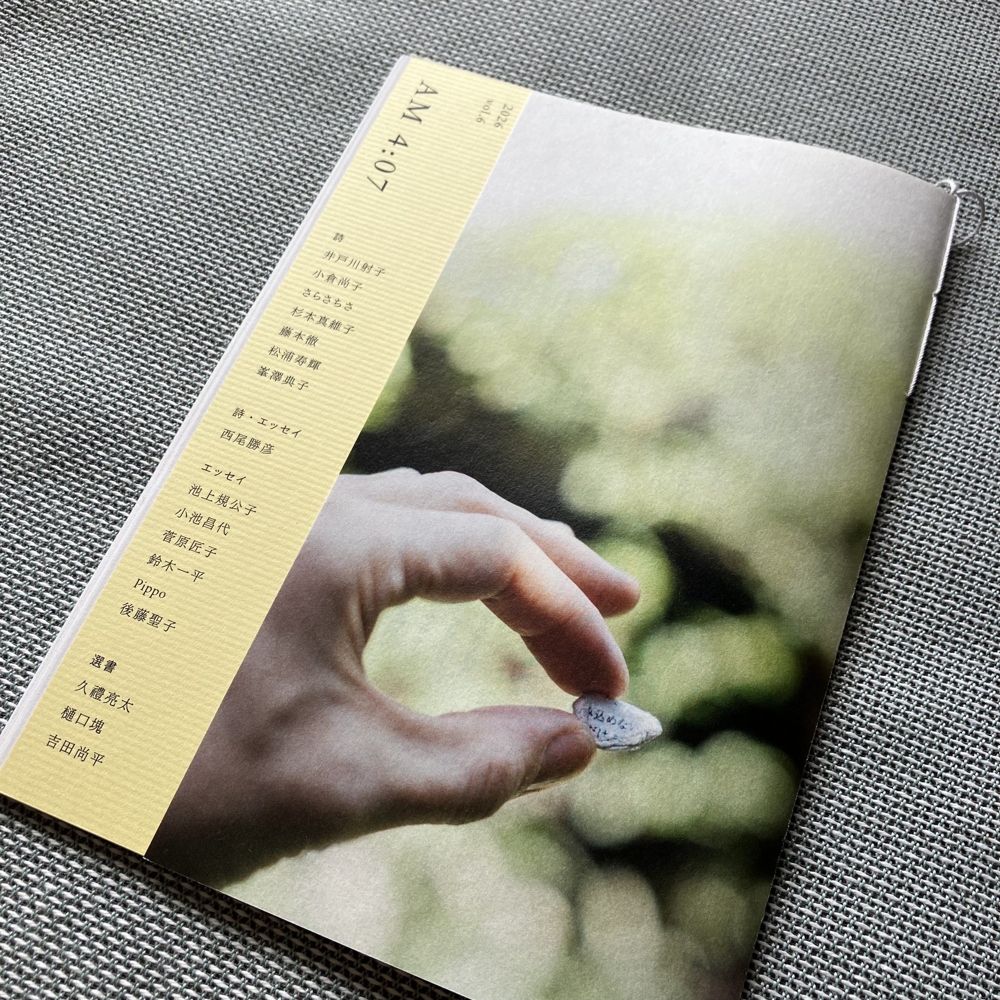

「AM4:07」vol.6
発行日：2026年09月12日
七月堂さんが発行されているZINE
「誕生日ケーキ」という詩を書かせていただきました
こちらからも購入ができます
七月堂shopサイト
AM4:07について
七月堂note『七月堂ZINE「AM4:07」創刊のお知らせ』
以下、敬称略
詩
井戸川射子
小倉尚子
さらさちさ
杉本真維子
藤本徹
松浦寿輝
峯澤典子
詩・エッセイ
西尾勝彦
エッセイ
池上規公子
小池昌代
菅原匠子
鈴木一平
Pippo
後藤聖子
選書
久禮亮太
樋口塊
吉田尚平
発行人：後藤聖子
組版・デザイン：川島雄太郎
写真：寺岡圭介（紙片）
製本指導：紙とゆびさき
印刷・製本・発行：七月堂